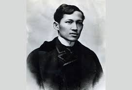

José Protasio Rizal Mercado y Alonso Realonda
About
Dr.José Rizal was born on June 19, 1861, in Calamba, Philippines. While living in Europe, Rizal wrote about the discrimination that accompanied Spain's colonial rule of his country. He returned to the Philippines in 1892, but was exiled due to his desire for reform. Although he supported peaceful change, Rizal was convicted of sedition and executed on December 30, 1896, at age 35.
Relevant Timeline
Early Life
- 1861 - On June 19th José Rizal is born to become the seventh child born to his parents. Three days later Rizal was christened with the name Jose Protasio Rizal-Mercado y Alonso-Realonda.
- 1875 - Rizal enters the Ateneo as a boarder at just 14 years of age.
- 1876 to 1877 - At the age of 15, Rizal receives a Bachelor of Arts Degree from the Ateneo de Manila. He not only receives this degree, but receives it with the highest honors possible. Also began studying Philosophy in St. Tomas University.
Career
- 1877 - Rizal writes a poem and receives recognition for his writing from the Royal Economic Society of Friends of the Country, also known as Amigos del Pals. The recognition comes in the form of a diploma of merit and honorable mention.
- 1878 - In June Rizal decides to switch gears in his educational pursuits and transfers into the medical courses at St. Tomas University. During this time he also writes an additional two poems that win him further recognition.
- 1880 - At the age of 19 Rizal writes another poem for a competition where he should have won first prize. However, he was not given this prize due to discrimination.
- In December Rizal produces his first Operetta called On the Banks of the Pasig. 1881 - Rizal creates the commemorative medal in wax for the Royal Economic Society of Friends centennial celebration.
- 1882 - In May Rizal gets money from his brother and travels secretly from Manila to Spain aboard a French ship and railroad entering Spain at the Port Bou.
- In June St. Tomas University realizes Rizal is nowhere to be found and threatens to take land away from his father who is a tenant even though his father has no idea of his whereabouts.
- June 15 Rizal makes his arrival in Barcelona and begins to study again in Madrid in October of that same year.
- 1886 - Rizal receives a degree in medicine from the Central University of Madrid at the age of 23. He then becomes an assistant to Dr. L. de Wecker and visits many universities in Berlin, Leipzig, and Heidelberg in the country of Germany.
Legacy
- 1887 - Rizal finishes his first novel titled Noli Me Tangere while staying in Berlin. The novel offends Catholic officials and Rizal is deemed to be a troublemaker. He then travels to Austria, Switzerland, and Italy. On July 3 Rizal leaves from Mersailles in Italy and arrives in Manila on August 5th. He travels to nearby areas escorted by a Spanish Lieutenant.
- 1888 - He travels back and forth in Spain, Japan, and other countries in Asia as he continued to practice medicine and write. Rizal was detained aboard a ship traveling back to Spain. Rizal was charged with treason, sedition, and the formation of illegal societies. He was sent to an island and held. He taught for four years while being held. He met a girl named Josephine Bracken who he wanted to marry but the church refused to give him a license to marry. He penned his last piece of writing called My Last Farewell and wrote an address to Filipino insurgents to lay down their arms against the Spanish. The address was never made public, but was added to the list of charges against him.
- 1896 - His request to go to Cuba was approved. On the way to Cuba he was arrested and charged with conspiracy and sedition. On December 27, he was condemned to death in a Spanish court and on December 30th, he was permitted to marry Josephine two hours before he was ultimately shot by a firing squad. He was buried in a secret grave.
- 1912 - On December 30th the ashes of Rizal were transferred to the Rizal Mausoleum and December 30th is declared a national holiday in honor of his memory.
José Rizal's life and works were critical to those from the Philippines who were looking for an end to Spanish colonization.
If you want to know more, read here.